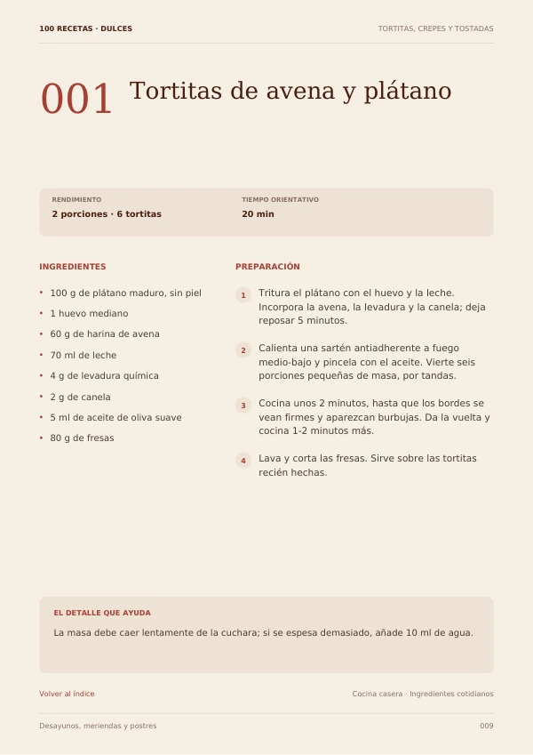

DESAYUNOS
Tortitas de avena y plátano
20 min · 2 porciones
100 RECETAS DULCES FIT
Dale variedad a tus desayunos, meriendas y postres con un recetario en español: cantidades, tiempo y preparación paso a paso para elegir y empezar a cocinar.
Compra en Hotmart · Recetario digital en PDF

Tres páginas reales del PDF. Una receta por página, con ingredientes, pasos numerados y un consejo para el resultado final.

20 min · 2 porciones

30 min + enfriado · 12 galletas

15 min + congelación · 6 polos
Si acabas preparando lo mismo o guardando recetas que luego no encuentras, tenerlas organizadas puede hacerte la cocina más fácil.
De unas tortitas para desayunar a una tarta para compartir. Explora sabores y técnicas diferentes en un solo recetario.
Consulta el tiempo orientativo y las porciones antes de empezar. Hay opciones con horno, de sartén y preparaciones frías.
Comprueba las cantidades y sigue las instrucciones numeradas. Sin tener que reconstruir una receta entre notas sueltas.
Fruta, avena, yogur, cacao, frutos secos y muchos otros ingredientes. Elige lo que te apetece probar.
Un PDF de 109 páginas, íntegramente en español, para abrir en un lector de PDF desde el móvil, la tableta o el ordenador.
Organizadas en 10 categorías, con una receta por página.
Revisa lo que necesitas antes de ponerte a cocinar.
Cuatro pasos por receta, porciones y tiempos orientativos.
Ve a la receta que buscas y consulta los detalles de preparación.
Empieza con las 100 recetas dulces o llévate también 100 recetas saladas para tener 200 ideas saludables para todo el día.
100 dulces + 100 saladas en una opción más completa.
OPCIÓN 1
Para desayunos, meriendas y postres saludables.
OPCIÓN 2 · PACK 2 EN 1
Una colección completa con ideas para desayunos, meriendas, postres, almuerzos y cenas.
100 dulces + 100 saladas
Producto digital. No se envía un libro físico.